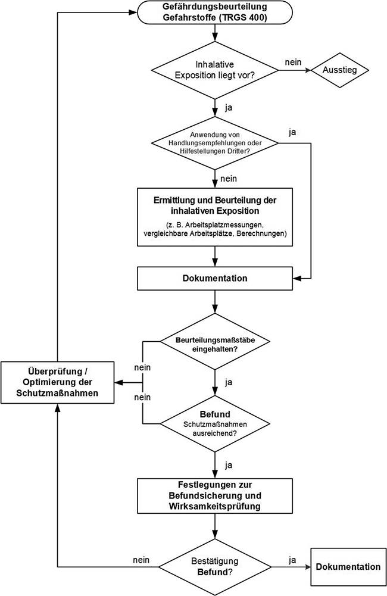

(1) Der Arbeitgeber hat im ersten Schritt zu ermitteln, bei welchen Tätigkeiten Gefahrstoffe verwendet werden sowie entstehen oder freigesetzt werden können. Ermittlungen zur inhalativen Exposition müssen für alle in der Luft am Arbeitsplatz auftretenden Gefahrstoffe unter Berücksichtigung der tätigkeitsbezogenen Informationen wie z. B. verwendete Arbeitsstoffe und Mengen, Arbeitsabläufe, Verfahren, Arbeits-, Betriebs- und Umgebungsbedingungen sowie vorhandene Schutzmaßnahmen vorgenommen werden.
(2) Ergebnisse früherer Arbeitsplatzmessungen oder anderer Messungen (siehe Anhang 2 Abschnitt 2) sowie nichtmesstechnischer Ermittlungen (siehe Anhang 3) sind zu berücksichtigen, sofern verfügbar.
(3) Zur frühzeitigen Erkennung erhöhter Expositionen auf Grund unvorhersehbarer Ereignisse oder eines Unfalls, insbesondere bei Tätigkeiten mit krebserzeugenden, keimzellmutagenen oder reproduktionstoxischen Gefahrstoffen der Kategorie 1A oder 1B, können z. B. Messungen technischer Parameter oder Verfahren der Dauerüberwachung (siehe Anhang 4 Abschnitt 2) eingesetzt werden.
(4) Anhand der Ergebnisse der Ermittlung der inhalativen Exposition wird ein Befund erstellt, der die Wirksamkeit der Schutzmaßnahmen beurteilt. Auf der Grundlage des Befundes sind Maßnahmen zur Befundsicherung festzulegen. Der Befund muss in die Gefährdungsbeurteilung nach TRGS 400 einfließen und dort abschließend bewertet werden.
(5) Für die Ermittlung einer inhalativen Exposition ist unabhängig von der eingesetzten Ermittlungsmethode die Erhebung der relevanten Randbedingungen vor Ort erforderlich.

Abbildung 1: Ermittlung und Beurteilung der inhalativen Exposition (schematisch)
(1) Zur Erfassung und Beschreibung der Tätigkeiten sind alle bestimmungsgemäßen Arbeitsvorgänge und Betriebszustände zu berücksichtigen. Dies gilt auch für nicht regelmäßig durchgeführte Tätigkeiten, wie z. B. Wartung oder Instandhaltung.
(2) Für die Tätigkeiten sind die Randbedingungen zu erheben und zu beschreiben, die für die inhalative Exposition relevant sind. Dies können sein:
(3) Auf Grundlage der Ermittlungen können bei gleichartigen Arbeitsbedingungen oder bei gleichartigen Tätigkeiten begrenzte Teile eines Betriebs zu einem Arbeitsbereich zusammengeführt werden. Der Arbeitsbereich (siehe Abschnitt 2 Absatz 2) kann einen oder mehrere Arbeitsplätze bzw. Arbeitsverfahren umfassen und räumlich oder organisatorisch festgelegt werden, z. B. durch Angabe der
(1) Die Stoffe, die zur inhalativen Exposition beitragen können, sind zu identifizieren. Dazu gehören z. B.:
Informationen hierzu können z. B. aus dem Gefahrstoffverzeichnis (siehe Abschnitt 5.8 der TRGS 400) und Sicherheitsdatenblättern entnommen werden.
(2) Aus den identifizierten Gefahrstoffen werden die für die inhalative Exposition relevanten Stoffe ausgewählt. Hierfür sind insbesondere das Freisetzungsverhalten, die Stoffmengen und die gefährlichen Eigenschaften zu berücksichtigen. Auf die Ermittlung bestimmter Stoffe kann verzichtet werden, wenn begründet werden kann, dass diese nicht relevant zur inhalativen Exposition beitragen (z. B. geringer Dampfdruck, geringe Einsatzmenge, geringes Staubungsverhalten).
(3) Für die Gefahrstoffe sind die verbindlichen Beurteilungsmaßstäbe gemäß Abschnitt 5.1 Absatz 1 zusammenzustellen. Ist für einen Gefahrstoff kein verbindlicher Beurteilungsmaßstab vorhanden, kann der Arbeitgeber andere Beurteilungsmaßstäbe gemäß Abschnitt 5.1 Absatz 2 heranziehen.
(4) Existiert für einen relevanten Gefahrstoff kein Beurteilungsmaßstab gemäß Abschnitt 5.1 Absatz 1 oder 2, muss die inhalative Exposition anhand anderer Kriterien beurteilt werden (s. Abschnitt 5.3.3 Nummer 8).
(5) Werden bei der Analyse weitere Stoffe identifiziert, die für die inhalative Exposition relevant sind, sind diese zu berücksichtigen.
(1) Auf der Grundlage aller tätigkeits- und stoffbezogenen Informationen ist die Methode für die Expositionsermittlung auszuwählen und anzuwenden. Es ist eine Ermittlungsmethode zu wählen, die Klarheit über die inhalative Exposition der Beschäftigten über die Schicht und über die Höhe der inhalativen Exposition bei Expositionsspitzen verschafft, so dass ein eindeutiger Befund erhoben werden kann.
(2) Für die Ermittlung der inhalativen Exposition stehen messtechnische Ermittlungsmethoden, z. B. Arbeitsplatzmessungen (siehe Anhang 2), oder nichtmesstechnische Ermittlungsmethoden (siehe Anhang 3) zur Verfügung.
(3) Validierte messtechnische und nichtmesstechnische Ermittlungsmethoden sind bevorzugt einzusetzen.
(4) Messtechnische und nichtmesstechnische Ermittlungsmethoden können einander ergänzend eingesetzt werden. So können z. B. die Ergebnisse von Berechnungen dazu dienen, Arbeitsplatzmessungen gezielter einzusetzen.
(5) Unter bestimmten Randbedingungen ist die Durchführung von Arbeitsplatzmessungen nicht möglich oder liefert keine verwertbaren oder repräsentativen Ergebnisse. Dazu gehören